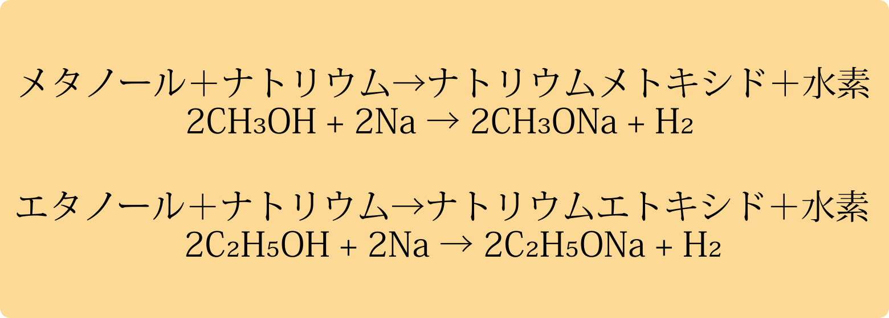

メタノール（CH3OH）
メタノールは、危険物第4類アルコール類の中で最も分子が小さく、 水と完全に混ざりやすい一方で毒性が強い代表的なアルコールです。
メタノールの物理的性質
| 性質 | 代表値 |
|---|---|
| 比重（20℃/4℃） | 約 0.79 |
| 沸点 | 約 64.7℃ |
| 凝固点 | 約 -97.6℃ |
| 引火点 | 約 11℃ |
| 発火点 | 約 464℃ |
| 燃焼範囲 | 約 6〜36vol% |
| 蒸気比重 | 約 1.11 |
| 水との関係 | 完全混和 |
※メタ：液軽0.79・気重1.1／引11・沸64／燃6–36／水“親友”（完全混和）
メタノールの性質と取り扱い上の注意
- 毒性が強く、誤飲すると失明や死亡に至るおそれがあります。
-
メタノールはアルコール類の中で最も単純な分子構造をもち、分子量も最小です。
（12 + 1 × 4 + 16 = 32） - 歴史的には木酢液の蒸留で得られ、現在は主に天然ガス（メタン）や石炭由来の合成ガスから製造されます。
- メタノールを酸化するとホルムアルデヒドになり、さらに酸化するとギ酸になる。
- 水と完全混和で拡散しやすい。漏えい時は堰き止め、排水系への流入を防止する。
- 燃焼時の火炎は青白く見えにくい。消火・接近時は火炎の可視性に注意する。
- 可燃蒸気対策：換気・着火源管理・静電気対策（接地・ボンディング）を徹底する。
- 保管は密栓・冷暗所・直射日光回避。通気口付き容器は使用しない。
- 消火はアルコール耐性泡（AR-AFFF）・粉末・CO₂・水霧が有効。直噴水は飛散拡大のおそれ。
- 不適合物：強酸化剤（硝酸・過酸化物など）と混合しない。
- 応急処置：飲み込んだ場合は吐かせず、直ちに医療機関へ。 眼・皮膚は速やかに洗浄、吸入は新鮮空気・安静。
- 参考：燃焼範囲 6〜36 vol%、引火点 約+11℃、 蒸気比重 約1.11（空気＞1で低所滞留）。
エタノール (C2H5OH)
エタノールは飲料用アルコールの主成分であり、消毒液や溶剤としても広く利用される代表的なアルコールです。
エタノールの物理的性質
| 性質 | 代表値 |
|---|---|
| 比重（20℃/4℃） | 約 0.79 |
| 沸点 | 約 78.3 ℃ |
| 凝固点 | 約 −114 ℃ |
| 引火点（CC） | 約 +13 ℃ |
| 発火点 | 約 363 ℃ |
| 燃焼範囲 | 約 3.3 〜 19 vol% |
| 蒸気比重（空気=1） | 約 1.59 |
エタノールの性質と取り扱い上の注意
- 毒性は比較的弱いが、麻酔作用・中枢神経抑制がある。大量摂取で意識障害・呼吸抑制のおそれ。
- エタノールを酸化するとアセトアルデヒド、さらに酸化で酢酸となる（酸化の段階反応）。
- 第4類・第1石油類（水溶性）。無色透明・特有の臭気で、水と完全混和。
- 物性の要点：比重 約0.79、引火点 約+13℃（CC）、沸点 約78℃、蒸気比重 約1.59（空気>1）。
- 可燃蒸気は低所に滞留しやすく、遠隔着火の危険がある（換気で濃度管理）。
- 燃焼範囲 3.3〜19 vol%。濃度がこの範囲に入ると着火しやすい。
- 炎は青色で見えにくい場合がある。初期消火・接近時は可視性に注意。
- 保管：密栓・冷暗所・直射日光回避。防爆換気を確保し、通気口付き容器は使用しない。
- 取り扱い：火気厳禁・静電気対策（接地/ボンディング）・非火花性工具の使用。
- 消火：アルコール耐性泡（AR-AFFF）・粉末・CO₂・水霧が有効。水の直噴は飛散拡大の恐れ。
- 不適合物：強酸化剤（硝酸・過塩素酸・過酸化物など）との混合は発熱・反応暴走の危険。
- 漏えい：火気遮断・換気。堰き止めて排水系流入を防止（完全混和で拡散しやすい）。不燃性吸収材で回収。
エタノールの製法と用途
| 区分 | 原料 / 製法 | 主な用途 |
|---|---|---|
| 合成アルコール（工業用・飲食不可） | 石油由来のエチレンを原料に化学合成（例：エチレンの水和反応） | 化学用品（化粧品・洗剤・塗料・医薬品原料・溶剤 など）、工業用エタノール |
| 発酵アルコール（食品・飲用可） | サトウキビ・トウモロコシ等の農作物を発酵→蒸留・精製 | 食品用（防腐・香料・抽出・試薬 など）、工業用エタノール、飲用（酒類） |
| 変性アルコール（非飲用） | エタノールに変性剤（メタノール/イソプロパノール/ベンゼン等）を混合 | 溶剤・洗浄・清掃・（規格により）消毒用途 など |
メタノールとエタノールに共通する性状（試験ポイント）
- 無色透明で特有の芳香がある。
- 水や多くの有機溶媒とよく溶け合う（水と完全混和）。
- 水で希釈すると引火点は高くなる（濃度が下がるほど可燃性は弱まる）。
- 揮発性が強い（常温で可燃蒸気を生じやすい）。
- 1つのヒドロキシ基（−OH）をもつ飽和1価アルコール。
- 酸化性物質と混合・接触禁止：第1類 三酸化クロム（CrO3）、 第6類 硝酸（HNO3）・過酸化水素（H2O2）等と反応し、 発熱・発火/爆発のおそれ（危険な過酸化物などの生成）。
- 青白い炎で燃えるため、明るい場所では炎が見えにくいことがある。
- ナトリウム（Na）と反応し、アルコラート生成＋水素発生（H2↑） ：2ROH + 2Na → 2RONa + H2。

出る出るポイント！メタノールとエタノールのまとめ
メタノールとエタノールは、共通する性状がそのまま試験の頻出ポイントになる。次の特徴はセットで押さえておきたい。
- どちらも 無色透明で特有の芳香 をもつ。
- 水や多くの有機溶媒とよく混ざり合う（完全混和）。
- 揮発性が強く、燃焼範囲も広いため、常温でも火災・爆発の危険がある。
- 青白い炎で燃えるため、明るい場所では炎が見えにくいことがある。
- Naと反応して水素を発生する（アルコラート生成＋H₂↑）。
ひっかけ注意！メタノールとエタノールの違い
選択肢では、メタノールとエタノールの「毒性・沸点・燃焼範囲」などを入れ替えてくるパターンが多い。
-
毒性:メタノールの方がはるかに強い。
「エタノールより毒性が弱い」→ ×。 - 用途：エタノールは飲料用・医薬品などにも用いられるが、 メタノールは 飲用不可の工業用アルコール が中心。
-
燃焼範囲：メタノールは約 6〜36 vol%、エタノールは約 3.3〜19 vol%。
数値を逆にした選択肢に注意。 -
蒸気比重：どちらも空気より重いが、エタノールの方がやや大きい。
「空気より軽い」と書かれていたら×。
1-プロパノール（n-プロピルアルコール）（C3H7OH）
1-プロパノール（n-プロピルアルコール）は、炭素数3の直鎖状アルコールで、 溶剤や中間体として利用される可燃性液体です。
1-プロパノール（n-プロピルアルコール）の物理的性質
| 性質 | 代表値 |
|---|---|
| 比重（20℃） | 0.8（実測値：0.803） |
| 沸点 | 97.2℃ |
| 引火点 | 15℃ |
| 発火点 | 412℃ |
| 燃焼範囲 | 2.1 ～ 13.7 vol% |
| 蒸気比重（空気=1） | 2.1 |
1-プロパノール（n-プロピルアルコール）の性質と取り扱い上の注意
- 無色透明の液体。アルコール臭をもつ。
- 水、エタノール、ジエチルエーテルによく溶ける。
- 引火点は約15℃と低く、常温で引火の危険性が高い。
- 蒸気比重は約2.1（空気=1）で、低所に滞留しやすい。火源に引火・爆発の危険。
- 燃焼範囲は約2.1～13.7 vol%と広く、可燃性蒸気に注意。
- 吸入すると中枢神経系に影響し、めまい・頭痛を起こすことがある。
- 皮膚・粘膜に対して刺激性をもつ。保護具の着用が必要。
- 貯蔵は冷暗所・密栓し、火気・熱源を避ける。
2-プロパノール（イソプロピルアルコール）((CH3)2CHOH)
2-プロパノール（イソプロピルアルコール）は、炭素数3の分枝状アルコールで、消毒用アルコールなどに広く用いられる可燃性液体です。
2-プロパノール（イソプロピルアルコール）の物理的性質
| 性質 | 代表値 |
|---|---|
| 比重（20℃） | 0.785 |
| 沸点 | 約 82℃ |
| 凝固点 | -89℃ |
| 引火点 | 約 12℃ |
| 発火点 | 約 399℃ |
| 燃焼範囲 | 約 2.0～12.7 vol% |
| 蒸気比重（空気=1） | 約 2.1 |
2-プロパノール（イソプロピルアルコール）の性質と取り扱い上の注意
- 無色透明の液体で、特有のアルコール臭をもつ。
- 水、エタノール、ジエチルエーテルによく溶ける。
- 引火点は約12℃と低く、常温でも火災の危険性が高い。
- 蒸気比重は約2.1（空気=1）で、低所に滞留しやすい。 火源に達すると爆発的に燃焼し、燃焼時は青白い炎を出す。
- 燃焼範囲は約2.0～12.7 vol%と広く、爆発の危険がある。
- 蒸気や高濃度の曝露でめまい・頭痛・中枢神経抑制を起こす。
- 皮膚・眼に刺激性を示すため、保護具（手袋・ゴーグル）の着用が必要。
- 消毒用アルコールに広く使用されるが、飲用不可・誤飲注意（代謝で有害作用）。
- 貯蔵は冷暗所で密栓し、火気・熱源を避ける。
- 2-プロパノールを酸化させるとアセトンになる。
n-プロパノールとイソプロパノールの比較
n-プロパノールとイソプロパノールの違いは、次の表のように性質や用途を対比して整理しておくと覚えやすくなります。
| 性質・注意点 | 1-プロパノール（n-プロパノール） | 2-プロパノール（イソプロパノール） |
|---|---|---|
| 化学式 | C3H7OH（直鎖構造） | (CH3)2CHOH（分枝構造） |
| 比重 （20℃） |
約 0.803 | 約 0.785 |
| 沸点 | 約 97℃ | 約 82℃ |
| 引火点 | 約 15℃ | 約 12℃ |
| 発火点 | 約 412℃ | 約 399℃ |
| 燃焼範囲 | 約 2.1～13.7 vol% | 約 2.0～12.7 vol% |
| 蒸気比重 （空気=1） |
約 2.1 | 約 2.1 |
| 性状 | 無色透明の液体、アルコール臭 | 無色透明の液体、強いアルコール臭 |
| 特徴 | 水やエタノールによく溶ける。 工業溶剤に用いられる。 |
「消毒用アルコール」の主成分。 飲用不可・誤飲注意。 |
| 危険性 | 蒸気は低所に滞留し爆発危険。 中枢神経抑制作用。 |
蒸気は低所に滞留し爆発危険。 刺激性が強く、中枢神経抑制作用。 |
| 貯蔵/ 取扱い |
冷暗所で密栓。火気厳禁。 | 冷暗所で密栓。火気厳禁。 |
出る出るポイント！プロパノール類のまとめ
- 1-プロパノール（n-プロピルアルコール）と2-プロパノール（イソプロピルアルコール）は、 ともに第４類第１石油類（水溶性）・引火点が低い可燃性液体。常温でも引火の危険が高い。
- どちらも無色透明でアルコール臭をもち、水やエタノール・エーテルなど多くの有機溶媒とよく混ざる（水と完全混和）。
- 蒸気比重はどちらも約2.1（空気＝1）で「空気より重い」。 低所に滞留しやすく、床付近での引火・爆発に注意。
-
1-プロパノール：直鎖構造（一次アルコール）。
沸点は約97℃、引火点は約15℃。工業用溶剤として利用される。 -
2-プロパノール：分枝構造（二次アルコール）。
沸点は約82℃と1-プロパノールより低く、引火点も約12℃と低い。
消毒用アルコールの主成分として広く用いられるが、飲用不可・誤飲注意。
ひっかけ注意！ここを間違えやすい
-
「蒸気は空気より軽い」「高所にたまりやすい」→ ×
プロパノール蒸気は空気より重く（約2.1）低所にたまりやすい。 -
「2-プロパノールの沸点は1-プロパノールより高い」→ ×
実際は 1-プロパノール ≒ 97℃ ＞ 2-プロパノール ≒ 82℃。 -
「消毒用として使われるから飲用もできる」→ ×
2-プロパノールは飲用不可・誤飲注意。エタノールと混同しない。 -
「いずれも水に溶けにくい有機溶剤である」→ ×
プロパノール類は水と完全混和。ガソリンなどの水に不溶な第１石油類と混同しない。 -
引火点の大小関係を問う問題で、「常温での危険性が高い＝引火点が高い」と誤解しがち。
引火点は低いほど危険（1-プロパノール約15℃、2-プロパノール約12℃）という感覚を押さえておく。
クイズ
次は第3章9節：第2石油類の性状に進みます。